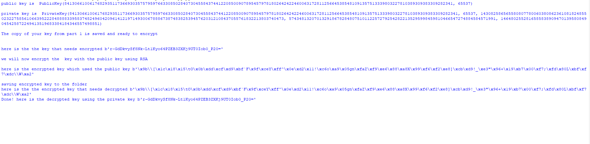

Symmetric key encryption algorithms use the same key for encrypting and decrypting the plain text file. Using the python cryptography library a random key is generated and the message in the plain txt file is encrypted and saved. When the program is done an option to decrypt the encryption is able to be ran by using the same key used to encrypt.
Asymmetric Encryption uses two keys a public and a private key. The public key is used to encrypt and the private key is used to decryption. This python program generates the pair of keys and encrypts the key that was generated from the earlier program.
